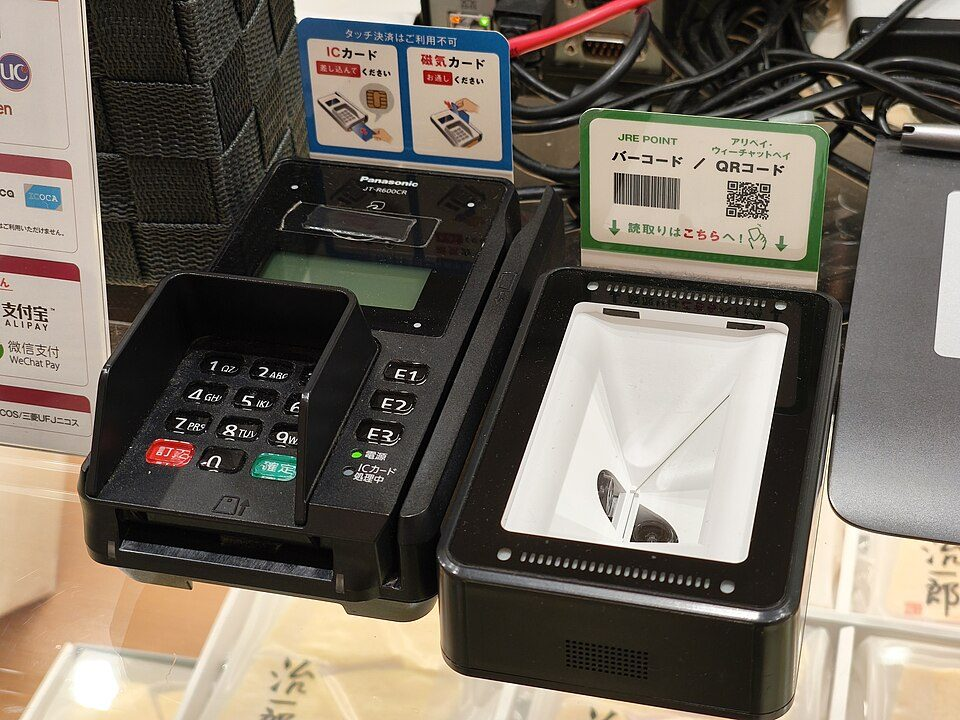

社会人お得技ノート⑥ 通信・サブスク・クレカ・ポイント
要点まとめ

ラベル: 新制度・改正 改悪・注意 終了
スマホ・通信
povo2.0は180日に1回のトッピング購入で回線維持
基本料0円でも、180日間トッピング購入がないと停止の場合あり[1]
日本通信SIM：1GBで月290円、20GBで月1,390円
「合理的シンプル290プラン」は1GBで月額290円[6]
楽天モバイル「最強家族割」は親戚・事実婚・パートナーも対象
1回線につき月110円（税込）の割引[8]
改悪・注意 ドコモ「いつでもカエドキプログラム」返却時最大22,000円
返却時の「プログラム利用料」は最大22,000円（税込）[11]
光回線のキャッシュバックは、金額より受け取り条件を確認
後から渡すキャッシュバックは受け取り条件の説明が必要[13]
サブスク
ファミリープランを同居の家族で使う
クレジットカード・ポイント
改悪・注意 PayPayカード、公共料金・税金の還元が0.5%に
公共料金・税金の還元が0.5%に下がった（2026年6月2日〜）[2]
リクルートカードは還元率1.2%・年会費無料
還元率1.2%で、年会費は永年無料[20]
リクルートカードプラスの還元率
変更前：2.0%変更後：1.5%
2026年3月から
三井住友のゴールドカード、年100万円利用で年会費永年無料
年100万円以上の利用で、翌年以降の年会費が永年無料[22]
SBI証券のクレカ積立、Olive預金残高で最大+0.5%
円普通預金残高100万円ごとに+0.1%上乗せ[24]
改悪・注意 ゴールドカードの空港ラウンジに回数制限（2026年）
SAISON GOLD Premiumは2026年4月から年2回まで[3]
改悪・注意 ウエルシアの「お客様感謝デー」の利用上限が縮小
報道では2026年11月20日から1日の上限が5,000ポイントに[29]
nanacoで税金・公共料金を払うときのポイント
チャージでポイントが付くのはセブンカード・プラス[32]
改悪・注意 楽天ペイの請求書払いはポイント付与の対象外
楽天キャッシュ払いも含めポイント進呈の対象外[35]
自治体×PayPayのキャンペーンは自治体ごとに条件を確認
2026年春の例では最大15〜30%の還元[37]
終了 ふるさと納税のポイント付与禁止
ポイントを付けるサイト等を通じた募集は2025年10月から禁止[38]
株主優待のクロス取引には貸株料がかかる
一般信用売りの売り建てには貸株料がかかる[39]
光熱費・暮らし
終了 電気・ガスの国の支援は2026年夏分（7〜9月使用分）で終了
東京ガスは11月検針分から補助金による値引きが終了[40]
不要品は自治体と連携した「ジモティー」で譲る
ジモティーは多くの自治体とリユースで連携[44]
くわしく
- 連携先は北九州市・相模原市・岡山市・川崎市など[44]
- 粗大ごみとして出す前に、譲渡を検討するのも一つの方法（筆者の見解）
今回確認できなかった点
- Kindle Unlimitedの割引オファー、Amazonの各種キャンペーン、コストコの非会員入店、マネックスカードの積立還元条件は、公式情報を確認できなかったため掲載していません。
出典（45件）
閲覧日はいずれも2026年11月1日
- povo2.0 提供条件・詳細（KDDI（povo））
- カード利用特典（ポイント）（PayPayカード）
- SAISON GOLD Premium サービス改定のお知らせ（クレディセゾン）
- ふるさと納税に関するQ&A 新旧対照表（総務省）
- povo Data Oasis（KDDI（povo））
- 合理的シンプル290プラン（日本通信）
- 合理的みんなのプラン（日本通信）
- 最強家族割（楽天モバイル）
- グループに参加できる条件（よくある質問）（楽天モバイル）
- 親戚や事実婚のパートナーも参加できるか（よくある質問）（楽天モバイル）
- いつでもカエドキプログラム 変更のお知らせ（NTTドコモ）
- いつでもカエドキプログラム（NTTドコモ）
- 電気通信事業法の消費者保護ルールに関するガイドライン（総務省）
- Spotify Premium（Spotify）
- ファミリー プランの登録と管理（YouTube ヘルプ）
- 価格改定のお知らせ（2026年5月8日）（任天堂）
- Nintendo Switch Online 料金プラン（任天堂）
- Microsoft 365 プラン比較（Microsoft）
- PayPayステップ条件変更のお知らせ（PayPayカード）
- リクルートカード（リクルート）
- リクルートカードプラス 改定のお知らせ（JCB）
- Oliveフレキシブルペイ ゴールド 年間100万円のご利用（三井住友銀行）
- Olive ゴールド（三井住友銀行）
- SBI証券のクレカ積立・Vポイント投資（三井住友銀行）
- Olive限定上乗せプランに関する記事（2026年3月18日）（Impress Watch）
- JQ CARDセゾンGOLD サービス変更のお知らせ（クレディセゾン）
- 空港ラウンジについて（よくある質問）（イオンカード）
- エポスゴールドカード（エポスカード）
- ウエル活の上限変更に関する記事（2026年9月14日）（DIME（小学館））
- 20日お客様感謝デー（よくある質問）（WAON POINT）
- WAON POINTへの交換（Vポイント）
- クレジットチャージ（nanaco）
- ポイントをためる（セブン・カードサービス）
- コンビニ納付（QRコード）Q&A（国税庁）
- 請求書払いについて（楽天ペイ）
- 獲得ポイントについて（楽天キャッシュ）
- 自治体キャンペーンのお知らせ（2026年3月13日）（PayPay）
- ふるさと納税 告示・通知等（総務省）
- 信用取引のコスト（三菱UFJ eスマート証券）
- 2026年11月検針分のガス料金（東京ガス）
- 電気・ガス料金負担軽減支援事業補助金に伴う値引き（東京ガス）
- ガス料金の改定（東京地区等）（東京ガス）
- 公式サイト（オクトパスエナジー）
- 自治体との連携（ジモティー）
- ふるさと納税制度の適正な運用について（令和8年9月25日 総税市第108号）（総務省）（閲覧日 2026年11月5日）
写真・画像の出典（1件）
- お店のキャッシュレス決済端末
写真: RuinDig/Yuki Uchida／Wikimedia Commons（CC BY 4.0）